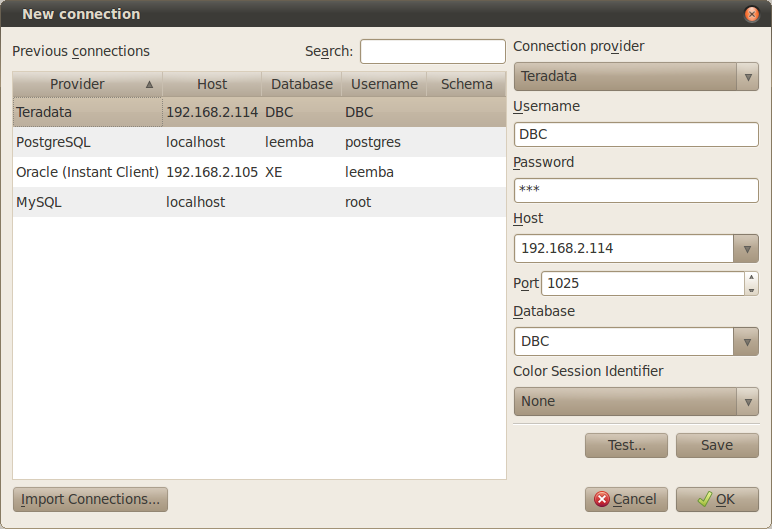

3.2 Connecting to a database
You can connect to a database by selecting the File|New Connection menu entry or the toolbar button. For more information about the menu and toolbar see Elements of the main window.
After selecting the menu you will be presented with the following dialog.

The filling out of this dialog is pretty straight forward.
- Previous
- This list contains the previous connection made, selecting an entry from this list will set all the values to the right to the correct. Doubleclicking will connect straight away (only makes sense if you save passwords).
- Connections
- Values to connect to this database again.
- Connection provider
- The type of connection to create. You can choose from Oracle, MySQL and others.
- Username
- The username with which to connect to the database
- Password
- The password to use for the connection, this defaults to manager. You can also configure TOra to remember your last used password (see Options)
- Use SQL*Net
- This is perhaps the most difficult setting. This indicates whether to connect locally to the database or use SQL*Net. If you check this box the connection is made through the Oracle listener, otherwise a local connection usually using shared memory or named pipes is made. This is only available for Oracle connections.
- Hostname
- The host on which the database resides. This is only available for non Oracle connections.
- Database
- What database to connect to, the listbox is filled with the values available in your tnsnames.ora file.
- Connection Mode
- The type of connection to make, usually normal always suffices here. But sometimes during database administration SYS_DBA or SYS_OPER is needed. If you don't know what these mean you probably shouldn't be using them.
Upon establishing a successful connection all the settings of the dialog will be saved and remembered when the next connection is made with the exception of the password.